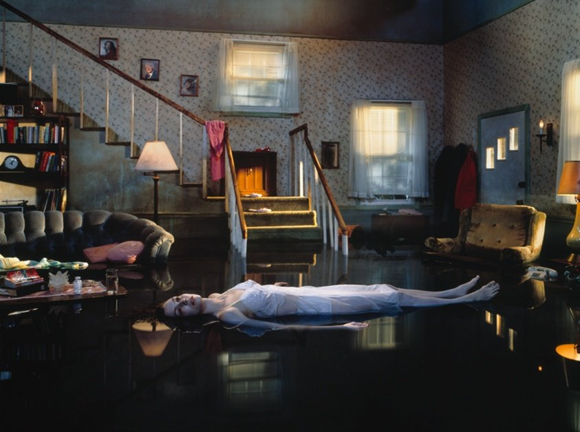

Untitled
Gregory Crewdson · 2000/01 · Digital chromogenic print; edition number six of ten · 127 × 152.4 cm · Art Institute of Chicago
In copyright. Look and learn: shown for study, not for download.
Gregory Crewdson makes a photograph the way a film is made: a lighting team, an art director, make-up, wardrobe, props and effects, dozens of people and weeks or months of planning for one image. He has worked with the same director of photography, Richard Sands, for some 25 years. Nearly all his pictures were made in the small towns of western Massachusetts. This print is a metre and a half wide and is number six in an edition of ten. As a teenager Crewdson played in a power pop group called Speedies.